ESPÉCIES EM SUAS CLASSES
classe mistério
O FURIA DA NOITE é um pertencente a classe mistério
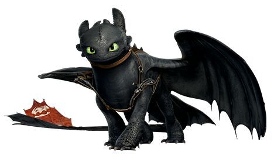
o CANÇÃO DA MORTE também pertence a essa classe
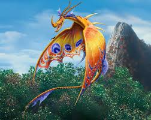
classe ataque
O CAÇADOR DE TEMPESTADES é pertencente a classe mistério
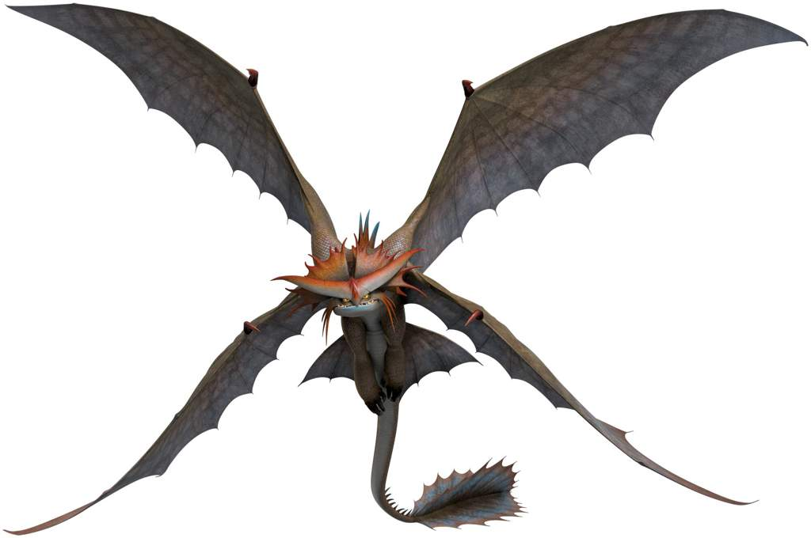
classe medo
O MORTE SILENCIOSA pertence a essa classe com extrema facilidade de entendimento
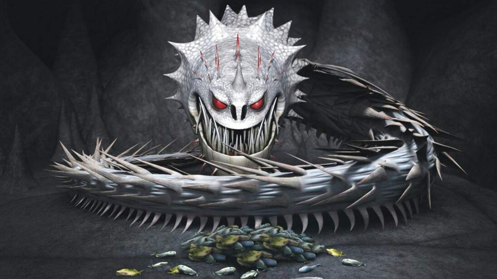
classe pesada
Os SENTINELAS são dragões que fazem parteda classe pesada
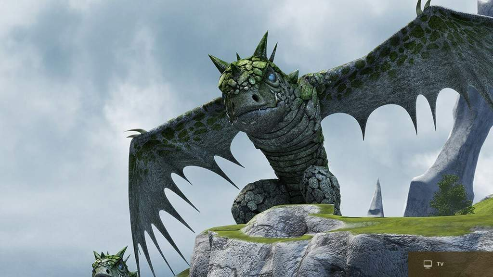
classe afiada
O NADER MORTAL pertence a essa classe,é visivelmente facil notar isso
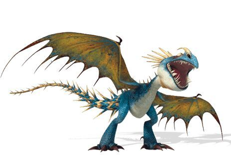
O LAMINA MORTAL assim como o nader é visivelmente pertencente a essa classe
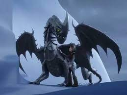
classe fogo
O PESADELO MONSTRUOSOpertence a essa classe
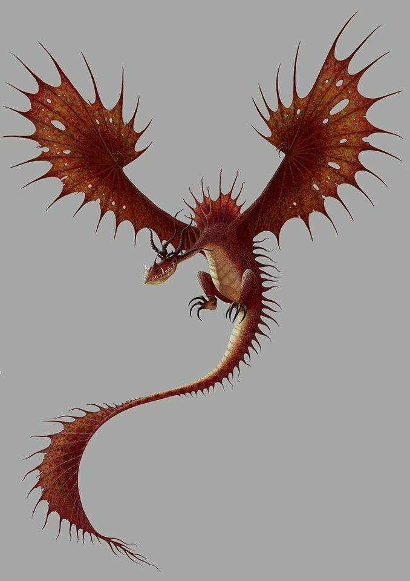
As LAGARTAS DE FOGO fazem parte desse grupo
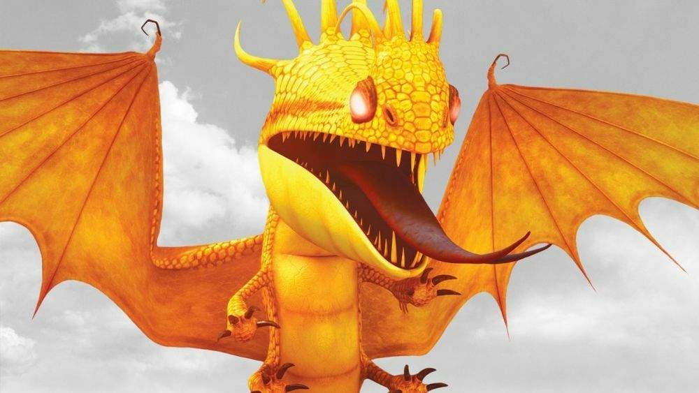
classe maré
O ESCALDERIVEL é um dragão que faz parte do grupo marés
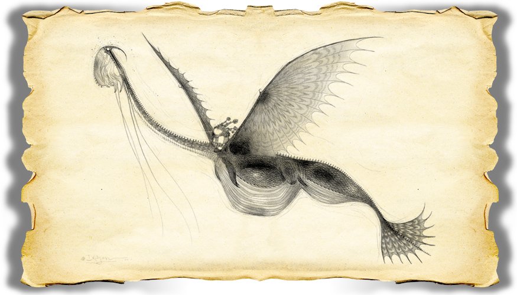
O TAMBOR TROVÂO também faz parte dessa classe
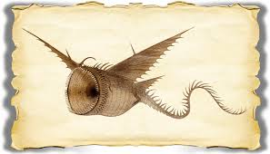
classe trovão
A especie FURIA DA LUZ é pertencente a classe trovão
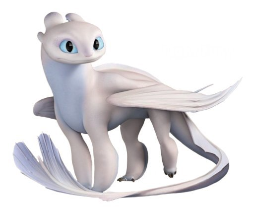
A especie THUNDER descendente dos furias da noite/luz é pertencente a classe trovão
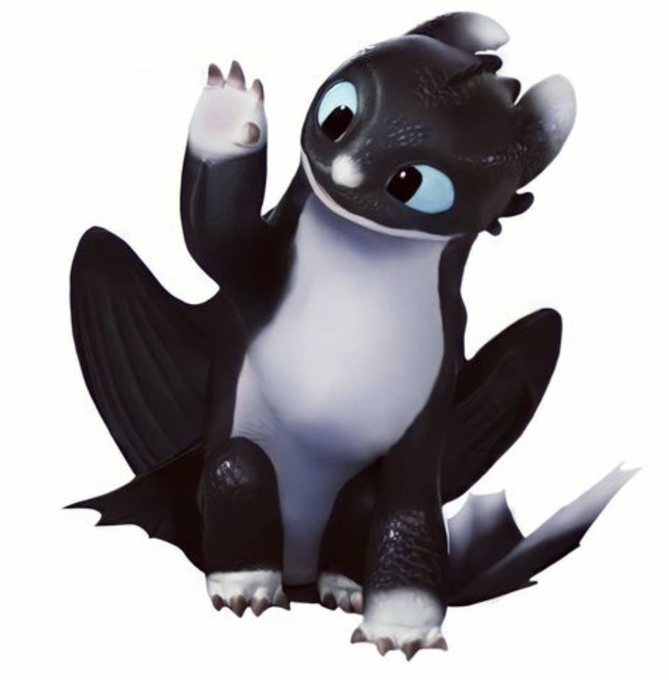